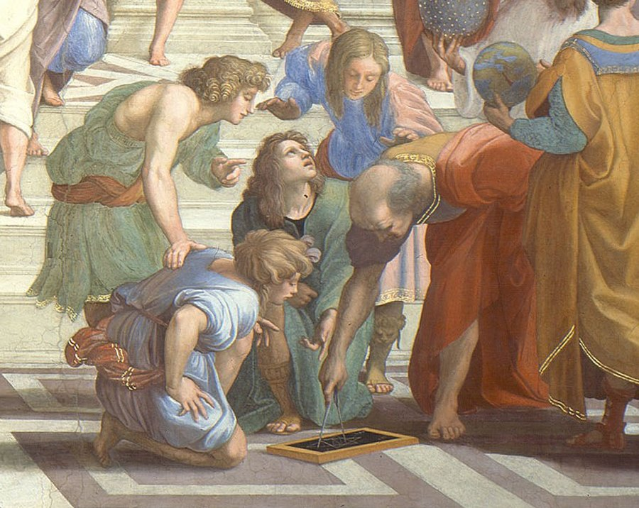
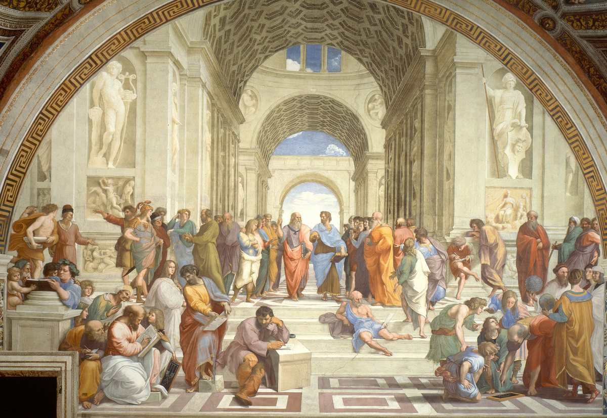
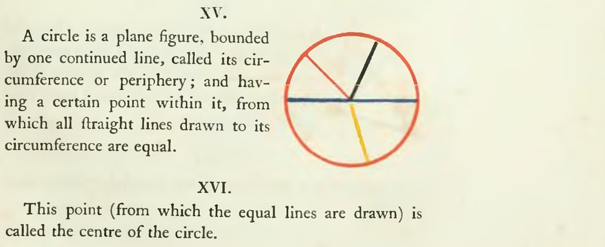

Circles
MA.K12.MTR.2.1 Show math in many ways. MTR.5.1 Use patterns and structure. MTR.6.1 Check that answers make sense.
Today: find the center of a circle, name the radius and the diameter, and see that the diameter is as long as two radii. Dimensions Math 3B, Chapter 12, Lesson 1 · Circles

Alexandria, Egypt · about 300 BC

What makes a circle a circle?
Every point on a circle is the same distance from one point: the center.
You will…
- Find the center of a circle.
- Name the radius and the diameter.
- Use the rule: the diameter is as long as 2 radii.
Why Euclid?
The big picture is a painting on a wall in Rome, made by Raphael about 500 years ago. It shows thinkers from long ago. In the corner, a teacher draws on a slate with a compass while students watch. Many people think he is Euclid. The small picture is a page from Euclid's book, printed in color in London in 1847.


Euclid taught in Alexandria, Egypt, about 2,300 years ago. We know very little about his life, but his geometry book is famous. Near the very start, it says what a circle is: a round shape with one point inside, where every straight line from that point out to the edge is the same length. That point is the center.
Today's math: find the center, then measure the radius and the diameter.
Today you'll double numbers and cut them in half. Type each answer, then check. You can fix any answer and check again.
Halves of a circle
A round loaf of bread is cut into 2 equal slices. Drag 1 slice onto the plate.
Think: The Paper Circle
🔨 Do · ✏️ WriteEuclid's students have a paper circle. How can they find the exact middle of it without a ruler?
A round piece of paper. Folding it leaves a crease, shown as a dashed line. After you find the middle, three gold dots on the edge show where to measure.
Fold it in half
Press 📄 Fold in half.
Fold it again
Press 📄 Fold a different way.
Find the special point
Tap the spot where the two dashed fold lines cross.
Measure to the edge
Press 📏 Measure to the next dot. Stop when all 3 gold dots are measured.
What do you notice?
Tell how
You found the center. Both folds went through it, and every line from the center to the edge was the same length: 11 cm.
The parts of a circle
- Center: the point in the middle. Every point on the circle is the same distance from it.
- Radius: a straight line from the center to the edge. Every radius of a circle is the same length. Two of them are called radii.
- Diameter: a straight line all the way across the circle, through the center. It is as long as 2 radii.
Know the radius? Double it: radius 2 cm, diameter 2 × 2 = 4 cm.
Know the diameter? Cut it in half: a fountain 50 ft across has a radius of 50 ÷ 2 = 25 ft.
Watch out: a circle with a radius of 35 in is not the same size as a circle with a diameter of 35 in. The one with the 35 in radius is twice as wide.
Four ways to stay on track
Your Turn: Label the Circle
🔨 DoEuclid's student drew a circle with a dot and two lines. The radius of this circle is 17 cm. Label each part. Then find the diameter.
A circle with a dot in the middle, a green line from the dot to the edge, and a violet line all the way across. Three empty label spots point to the parts.
Label the parts
Drag each label to the spot that points to its part: center, radius and diameter.
Find the diameter
Ben Forgets to Double
🔨 Do · ✏️ WriteA round table has a radius of 40 cm. Ben says, "The radius is 40 cm, so the diameter is 40 cm too."
The tabletop as a circle. One radius goes from the center to the right edge. A second radius starts at the center too, and you can turn it.
Make a straight line
Drag the end of the second radius around the edge until the two radii make one straight line across the table.
How long is it across?
Help Ben
Mia's Line Misses the Center
🔨 Do · ✏️ WriteA round mirror has a radius of 14 cm. Mia draws a line across it and says, "This line is 20 cm long, so the diameter is 20 cm." But her line does not go through the center.
The mirror as a circle with a dot at the center. Mia's red line goes across the circle but misses the dot. One end of the line can move along the edge.
Move the line
Drag the moving end of the red line along the edge until the line goes through the center dot.
The real diameter
Help Mia
Kai's Two Circles
🔨 Do · ✏️ WriteCircle A has a radius of 21 cm. Circle B has a diameter of 21 cm. Kai says, "Both say 21, so they are the same size."
Grid paper and a compass, like the Compass tool on the tools site. Each square is 1 cm. Circle B is already drawn, with its diameter. The compass will draw circle A.
Open the compass
Drag the yellow pencil away from the point until the compass is open 21 cm.
Draw circle A
Drag the yellow pencil all the way around the point.
Compare the circles
Help Kai
On Your Own: The Round Rug
🔨 Do · ✏️ WriteA round rug is 38 inches across. Draw the rug with a compass.
Grid paper and a compass. Here each square is 1 inch. The gray point is the center of the rug.
Find the radius
Open the compass
Drag the yellow pencil away from the point until the compass is open 19 inches.
Draw the rug
Drag the yellow pencil all the way around the point.
Tell how you know
Euclid's Two Circles
🔨 DoDraw circle A with a radius of 15 cm. Then put the compass point on the edge of circle A and draw circle B, the same size.
Grid paper and a compass. Each square is 1 cm. This is the very first drawing in Euclid's book. Look for it on the old page below.
Problem 1 · Open the compass
Drag the yellow pencil away from the point until the compass is open 15 cm.
Problem 1 · Draw circle A
Drag the yellow pencil all the way around the point.
Problem 1 · Move the point
Drag the gray compass point onto the gold dot on the edge of circle A.
Problem 1 · Draw circle B
Drag the yellow pencil all the way around the point.
Problem 1 · How far apart?
Problem 2 · Where the circles cross
Tap the gold point at the top, where the two circles cross.
Problem 2 · Two new lines

Prove It
✏️ WriteProblem 3 · Prove It
Two Plates in a Box
Two same-size round plates fit side by side in a box that is 92 cm long. They touch each other and both ends of the box. What is the radius of each plate?
Turn in your work
- Check the list below. Jobs 1 to 8 are required. The Bonus is optional.
- Press 📋 Gather my answers, then 📋 Copy. Or press 🖨️ Print or save as PDF.
- Open this lesson's assignment in Canvas.
- Paste your answers (or upload your PDF and journal photo), then press Submit.
All my answers
Your answers and your work on this page save on this device as you go.
Before you turn in
- I finished Jobs 1 to 8.
- I can find the center, a radius and a diameter.
- I doubled the radius to find the diameter.
- I cut the diameter in half to find the radius.
- I tried the Bonus. (optional)
Lesson 3.12.02 · Angles
Next, you'll see what happens where two straight lines meet: an angle.
El Grillo (The Cricket)
A short, happy song for four voices, printed in Venice in 1505. The words tell about a cricket that sings and sings. Listen for the quick, chirping notes.
"El Grillo," printed by Ottaviano Petrucci in Venice in 1505, usually credited to Josquin des Prez. Sung by the dwsChorale. CC BY-SA 3.0, via Wikimedia Commons.